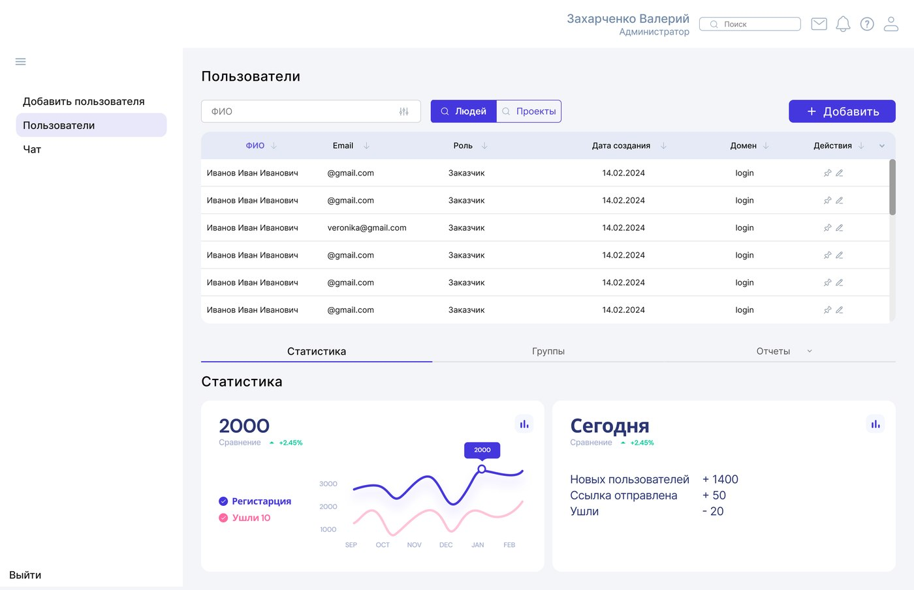
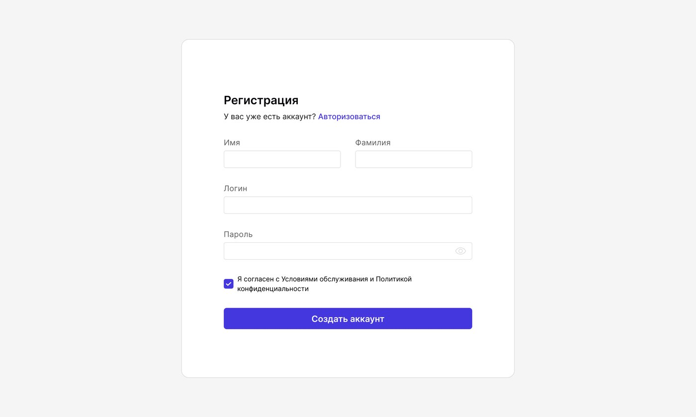

Личный кабинет администратора и регистрация пользователя в NDA-проекте — бирже, которая соединяет заказчиков и исполнителей.
Предложить видение личного кабинета администратора платформы и флоу регистрации пользователя — двух разделов, через которые проходит каждый новый участник биржи и которыми ежедневно пользуется команда поддержки.
Начала с исследования: изучила боли администраторов других платформ и разборы реальных кейсов. Выделила, что администраторам важно не смешивать в одной карточке заказчиков и исполнителей, иметь быстрый поиск и добавление пользователей, ссылки на списки и проекты, отчёты и статистику по регистрациям и оттоку. Отдельно респонденты отмечали ценность таблиц, удобных для сравнения и фильтрации, и возможность решать проблемы пользователей прямо из панели — восстановить удалённые файлы, создать корпоративную папку, деактивировать ссылку.
Собрала пользовательские истории вида «Я как администратор хочу … , чтобы …» и на их основе — User Flow: от входа в кабинет к четырём веткам сценариев — добавить пользователя, просмотреть и отсортировать список, отследить статистику, перейти к отчётам или поиску по проектам. Дальше — вайфреймы, где определила расположение основных блоков кабинета: меню, таблица пользователей, статистика.

Для регистрации отдельно спроектировала мобильную и десктопную версии. В мобильной — возрастной гейт «Вам есть 18?», запрос геолокации, выбор региона и авторизация по номеру телефона с кодом подтверждения и сообщением об ошибке при неверном коде. В десктопной — более компактная форма входа и регистрации с полями имени, логина и пароля, а также валидацией при неверном пароле.

Итоговые макеты объединили оба сценария: у администратора на главном экране — приветствие с онбордингом и быстрый доступ к разделам «Пользователи», «Чат» и «Администрирование»; в кабинете пользователя — расширенная анкета с основными и дополнительными данными и список задач с фильтром по статусу, ответственному и датам.
Собрала полный флоу регистрации — от возрастного гейта до создания аккаунта, в мобильной и десктопной версиях — и личный кабинет администратора с управлением пользователями, поиском по людям и проектам, статистикой и отчётами. Макеты переданы в разработку.